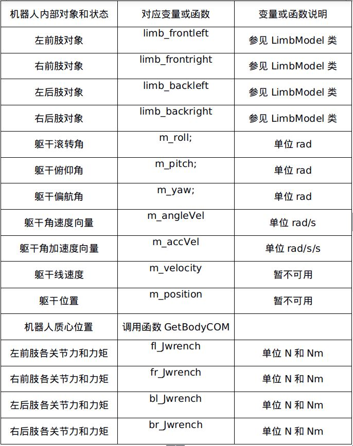
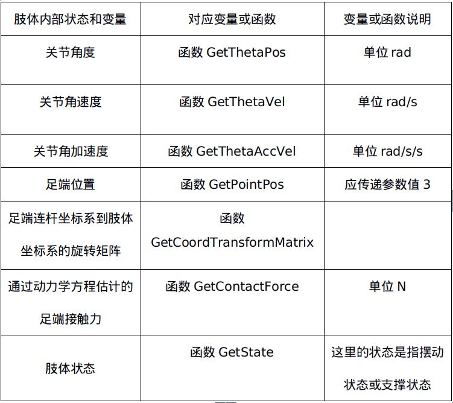
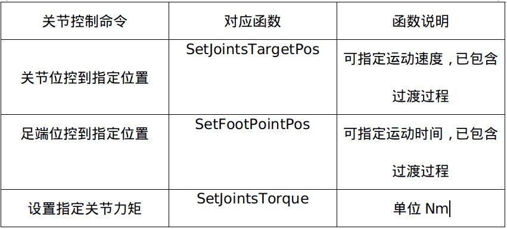

Section author: 常旭 <457911161@qq.com>
ISROBOT四足机器人程序使用说明文档¶
ISROBOT四足机器人程序由C++语言编写，主要由核心四足机器人代码和外围通信组件构成。核心四足机器人代码是独立于操作系统与硬件平台的，外围通信组件目前采用的是IGNITION ROBOTICS的Transport。四足机器人程序目前支持的机器人结构为单刚体躯干外加四个肢体，每个肢体由三连杆组成。第一个连杆与躯干构成的关节为髋侧关节，第二个连杆与第一个连杆构成的关节为髋前关节，两关节轴线成90度夹角，第三个连杆与第二个连杆构成的关节为膝关节，其轴线与第二关节轴线平行。当前程序支持的特性如下：
1.支持Gazebo仿真环境，配有相应的四足机器人模型文件。
2.与提供的matlab_app程序通信，生成Matlab数据文件。
在使用本程序前应具备以下知识：
1.读过机器人学相关书籍，如《机器人学导论》。
2.熟悉Ubuntu操作系统。
3.如果要使用本程序支持的仿真环境Gazebo，需要了解Gazebo的基本操作及功能。Gazebo的学习资料可参见官网 http://gazebosim.org/tutorials 。
Note
本程序的理论依据和详细数学模型请参考文档 四足机器人模型、运动学与动力学(三连杆模型)。
下面将介绍如何使程序在Gazebo仿真环境中运行。
开始¶
环境搭建¶
1.首先安装Ubuntu操作系统，建议版本18.04。
2.建议直接安装ROS机器人操作系统，安装方法可参见官网 https://www.ros.org，ROS安装好后会包含有Gazebo。注意：不要下载源文件自己编译生成ROS，要按照官网安装指示直接下载编译好的文件。
3.控制台输入 git clone https://github.com/NUDT-robot/quadrupedrobot.git。下载完成后，要了解文件结构请参见 文件组织结构。
4.Quadruped_Robot3文件夹是一个Gazebo可识别的四足机器人模型，将这个文件夹放到Gazebo能找到的位置(在GAZEBO_MODEL_PATH中指定，参见 http://gazebosim.org/tutorials?tut=components&cat=get_started 关于Environment Variables的描述)。
5.gazebo_plugin是加载模型时用到的插件，将这个文件夹放到Gazebo能找到的位置(在GAZEBO_PLUGIN_PATH中指定，参见 http://gazebosim.org/tutorials?tut=components&cat=get_started 关于Environment Variables的描述)。
6.打开一个终端，输入命令gazebo，然后找到Quadruped_Robot模型并加入仿真环境中。如果要使用这里提供的Gazebo世界文件，在命令行中运行gazebo quadrobot.world即可。
7.点击Gazebo中的Play按钮，开始仿真。
8.四足机器人程序由CMake管理，进入RobotClass/quadrupledrobot文件夹，在命令行中运行cmake，然后运行make即可完成编译，建议在Qt、Eclipse等IDE中编译并进行开发。默认情况下对matlab库的依赖已被注释掉，如有需要，自行修改添加相关路径即可。
9.编译完成后会生成可执行文件quadrupedrobot，在命令行中输入./quadrupedrobot即可使程序运行。
10.在Gazebo中观察到机器人从趴下到站起的过程，表明四足机器人程序与Gazebo的环境搭建完成。
在哪里写自己的代码？¶
有关程序代码的结构与移植请参考开发者文档中的 代码结构与移植 。
打开quadrupedrobot.cpp文件，找到函数QuadRobot::GaitAlgorithm，所有机器人控制算法的实现可以在这里完成。
机器人状态变量和可调用的函数¶
编写控制算法时要用到机器人的相应信息和状态，以下表格给出当前可得到的机器人内部对象、状态以及控制机器人执行相应动作的函数。
可用的机器人变量( 详见QuadRobot类成员变量):
{kind=link}
可用的肢体及关节变量( 详见LimbModel类公共成员函数):
{kind=link}
可用的控制命令( 详见QuadRobot类控制函数):
{kind=link}
有关本程序的详细说明应参考 ISROBOT四足机器人程序开发文档 。
Note
如果您发现任何有关文档或程序中出现的错误，可以联系邮箱457911161@qq.com，随时欢迎您提出宝贵意见。